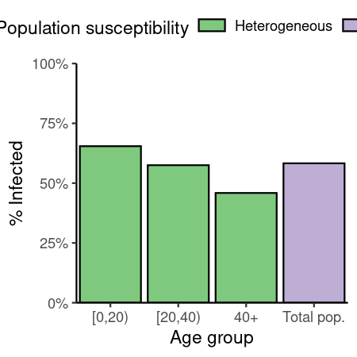
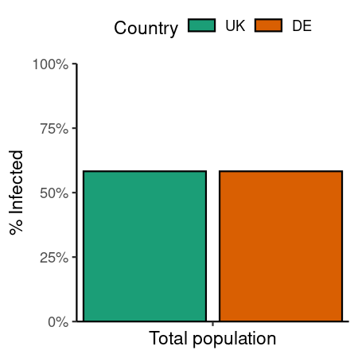

Code
# UK population size is about 67 million in 2023
uk_pop <- 67 * 1e6
# R0 for pandemic influenza
r0_flu <- 1.5This first example considers two scenarios of the final size of an influenza epidemic, and examines how considering the age structure of the population can influence estimates of the final epidemic size. 1. Scenario 1 is the uniform mixing scenario, in which all individuals are assumed to be mixing homogeneously, with no differences in social contacts by age or other demographic characteristics. 2. Scenario 2 is the age-stratified mixing scenario, in which individuals are divided into three age bins, 0 – 19, 20 – 39, and 40+, with different social contact patterns for each age group with the other age groups.
Code
# create a scenario object for uniform mixing and susceptibility
uniform_mixing <- scenario(
name = "uniform_mixing",
model_function = "finalsize::final_size",
parameters = list(
r0 = r0_flu,
contact_matrix = matrix(data = 1.0 / uk_pop),
demography_vector = uk_pop,
susceptibility = matrix(1.0),
p_susceptibility = matrix(1.0),
solver = "newton"
),
extra_info = list(
country = "UK",
age_groups = "uniform population"
),
replicates = 1
)
# a scenario for age stratified mixing
# get age group names
age_groups <- rownames(make_parameters_finalsize_UK()$contact_matrix)
age_stratified_mixing <- scenario(
name = "age_stratified_mixing",
model_function = "finalsize::final_size",
parameters = make_parameters_finalsize_UK(r0 = r0_flu), # use convenience fn
extra_info = list(
country = "UK",
age_groups = age_groups
),
replicates = 1
)
# view scenario
age_stratified_mixing
#> Epidemic scenario object
#> Scenario name: "age_stratified_mixing"
#> Model function: finalsize::final_size
#> Extra information on: "country", "age_groups"
#> Scenario replicates: 1
#> Scenario outcomes are not preparedCode
# create a third scenario from a different country, say, Germany
# with uniform mixing and susceptibility
# create a scenario object for uniform mixing
de_pop <- 84 * 1e6 # about 84 million
uniform_mixing_de <- scenario(
name = "uniform_mixing_de",
model_function = "finalsize::final_size",
parameters = list(
r0 = r0_flu,
contact_matrix = matrix(data = 1.0 / de_pop),
demography_vector = de_pop,
susceptibility = matrix(1.0),
p_susceptibility = matrix(1.0),
solver = "newton"
),
extra_info = list(
age_groups = "uniform population"
),
replicates = 1
)
# print to view
uniform_mixing_de
#> Epidemic scenario object
#> Scenario name: "uniform_mixing_de"
#> Model function: finalsize::final_size
#> Extra information on: "age_groups"
#> Scenario replicates: 1
#> Scenario outcomes are not prepared
# add extra information to the Germany scenario using a helper function
uniform_mixing_de <- sce_add_info(
uniform_mixing_de,
info = list(
country = "Germany"
)
)
# check that information has been added
uniform_mixing_de
#> Epidemic scenario object
#> Scenario name: "uniform_mixing_de"
#> Model function: finalsize::final_size
#> Extra information on: "age_groups", "country"
#> Scenario replicates: 1
#> Scenario outcomes are not preparedCreate a comparison object to hold the comparisons and filter for comparable scenarios.
Code
flu_comparison <- comparison(
uniform_mixing, age_stratified_mixing, uniform_mixing_de,
baseline = "uniform_mixing"
)
# print to view
flu_comparison
#> Scenario comparison object
#> Number of scenarios: 3
#> Baseline scenario: "uniform_mixing"
#> Some scenarios have no data, use `run_scenario()` to prepare data
#> Scenario matching variables:
#> No matching variables specified yet.
#> Scenario comparison variables:
#> No comparison variables specified yet.
#> Model functions found:
#> finalsize::final_sizePrepare data for all scenarios at once using the run_scenario() method for comparison objects.
Code
flu_comparison <- run_scenario(flu_comparison)
# check that data is ready
flu_comparison
#> Scenario comparison object
#> Number of scenarios: 3
#> Baseline scenario: "uniform_mixing"
#> All scenario data are prepared, use `sce_get_outcomes()` to get data
#> Scenario matching variables:
#> No matching variables specified yet.
#> Scenario comparison variables:
#> No comparison variables specified yet.
#> Model functions found:
#> finalsize::final_sizeComparing within the UK
To compare within the UK, filter the comparison object by the “country” entry in the extra information in each scenario.
Code
# filter on the country and whether data have a 'p_infected' column
flu_comparison_uk <- sce_filter_comparable(
flu_comparison,
match_variables = "country",
comparison_variables = "p_infected"
)
# print and view
flu_comparison_uk
#> Scenario comparison object
#> Number of scenarios: 2
#> Baseline scenario: "uniform_mixing"
#> All scenario data are prepared, use `sce_get_outcomes()` to get data
#> Scenario matching variables:
#> "country"
#> Scenario comparison variables:
#> "p_infected"
#> Model functions found:
#> finalsize::final_size
sce_get_scenario_names(flu_comparison_uk)
#> [1] "uniform_mixing" "age_stratified_mixing"Get scenario outcomes and visualise.
Code
# get data which are final_size outputs bound together
data_comparison_uk <- sce_get_outcomes(flu_comparison_uk)
# print to view
data_comparison_uk
#> demo_grp susc_grp susceptibility p_infected replicate
#> <char> <char> <num> <num> <int>
#> 1: demo_grp_1 susc_grp_1 1 0.5828116 1
#> 2: [0,20) susc_grp_1 1 0.6544866 1
#> 3: [20,40) susc_grp_1 1 0.5750030 1
#> 4: 40+ susc_grp_1 1 0.4588871 1
#> scenario_name
#> <char>
#> 1: uniform_mixing
#> 2: age_stratified_mixing
#> 3: age_stratified_mixing
#> 4: age_stratified_mixing
# change name of total population group
data_comparison_uk[scenario_name == "uniform_mixing", demo_grp := "Total pop."]Code
ggplot(data_comparison_uk) +
geom_col(
aes(demo_grp, p_infected, fill = scenario_name),
col = "black"
) +
expand_limits(
x = c(0.5, nrow(data_comparison_uk) + 0.5)
) +
scale_fill_brewer(
palette = "Accent",
name = "Population susceptibility",
labels = c("Heterogeneous", "Uniform")
) +
scale_y_continuous(
labels = scales::percent,
limits = c(0, 1)
) +
theme_classic() +
theme(
legend.position = "top",
legend.key.height = unit(2, "mm")
) +
coord_cartesian(
expand = FALSE
) +
labs(
x = "Age group",
y = "% Infected"
)
Comparing uniform mixing, across countries
Filter for the “age_groups” attribute to compare uniform_mixing across the UK and Germany.
Code
# filter on the country and whether data have a 'p_infected' column
flu_comparison_uniform <- sce_filter_comparable(
flu_comparison,
match_variables = "age_groups",
comparison_variables = "p_infected"
)
# print and view
flu_comparison_uniform
#> Scenario comparison object
#> Number of scenarios: 2
#> Baseline scenario: "uniform_mixing"
#> All scenario data are prepared, use `sce_get_outcomes()` to get data
#> Scenario matching variables:
#> "age_groups"
#> Scenario comparison variables:
#> "p_infected"
#> Model functions found:
#> finalsize::final_size
# print scenario names in this comparison
sce_get_scenario_names(flu_comparison_uniform)
#> [1] "uniform_mixing" "uniform_mixing_de"Get scenario outcomes and visualise.
Code
# get data which are final_size outputs bound together
data_comparison_uniform <- sce_get_outcomes(flu_comparison_uniform)
# print to view
data_comparison_uniform
#> demo_grp susc_grp susceptibility p_infected replicate scenario_name
#> <char> <char> <num> <num> <int> <char>
#> 1: demo_grp_1 susc_grp_1 1 0.5828116 1 uniform_mixing
#> 2: demo_grp_1 susc_grp_1 1 0.5828116 1 uniform_mixing_deCode
ggplot(data_comparison_uniform) +
geom_col(
aes(demo_grp, p_infected, fill = scenario_name),
col = "black",
position = position_dodge(width = 1)
) +
expand_limits(
x = c(0.5, 1.5)
) +
scale_fill_brewer(
palette = "Dark2",
name = "Country",
labels = c("UK", "DE")
) +
scale_y_continuous(
labels = scales::percent,
limits = c(0, 1)
) +
theme_classic() +
theme(
legend.position = "top",
legend.key.height = unit(2, "mm"),
axis.text.x = element_blank()
) +
coord_cartesian(
expand = FALSE
) +
labs(
x = "Total population",
y = "% Infected"
)